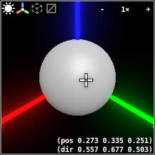
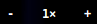
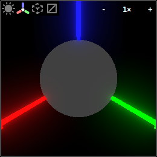
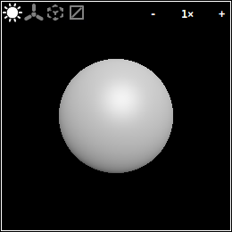
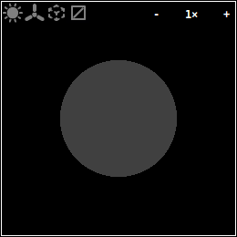
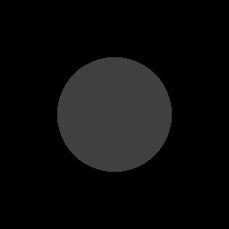
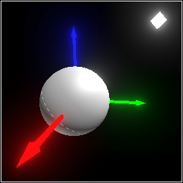

1 Quick Start
This section is best understood by following along with the examples in DrRacket.
When the mouse hovers over a displayed Pict3D instance, it looks something like this:

W and S (or ↑ and ↓): forwards and backwards
A and D (or ← and →): left and right
R and F (or PgUp and PgDn): up and down
Flying around demonstrates why the axis arrows are necessary. The sphere looks similar from every direction, so it’s easy to get lost. (If you do get lost, press Esc.)
The numbers in the lower right are information about the position and orientation of the closest surface point in space under the mouse cursor. Right-clicking allows you to copy the information to the clipboard.
The  in the upper right shows the scale the Pict3D is rendered at. Clicking on the - and + parts decrease and increase the scale.
The icon toggles a global grid. The icon toggles triangle wireframes, which are good for showing tessellations. Clicking the icon toggles the displayed Pict3D’s default lighting, which is also not part of the scene. Clicking the icon toggles the origin axes and other indicators. With default lighting off and indicators off, the display looks respectively like
 
With both off, the displayed Pict3D looks like this:

> (pict3d->bitmap (sphere origin 1/2)) 

If you then click , the octahedron will disappear, because it’s not part of the scene, either. The light itself is actually invisible.
Shapes: visible 2D surfaces in 3D space. Surfaces are visible on only one side.
Lights: invisible color emitters.
Groups: invisible, named, oriented collections of other objects.
If a 'camera group isn’t in the scene, an orientation is chosen automatically by (current-pict3d-auto-camera).